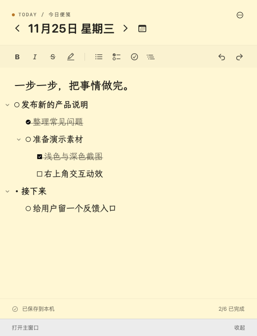
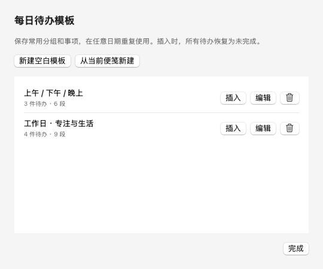
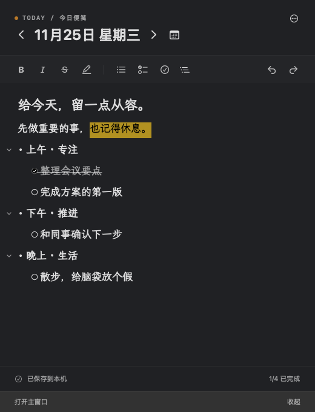

把大事拆成能做的小事
步骤分清了，
进展也就看清了。
用 Tab 一层层拆开任务，用折叠留下眼前要做的部分。孙项目使用方形标记，层级更容易辨认。
全部子待办完成后，父待办会逐级自动完成。子项恢复未完成时，上层也随之更新。
Shift+Tab 减少一级缩进。父项目移动时，下属项目一起移动。取消的子事项不计作完成。
macOS 本地便笺与待办
一个想法、一件待办，值得及时记下。鼠标推到右上角，便笺就在手边。移出后自动保存并收起，继续做正在做的事。
macOS 14+ · Apple Silicon / Intel · MIT 开源
v0.1.0-beta.1 · 未经 Apple 公证，首次打开可能需手动批准

让记录接上你的工作
应用运行时，右上角停留约 0.4 秒即可唤出面板。鼠标移入时保持展示，移出后短暂延迟再保存收起。

此动图用于说明交互流程，并非屏幕实录。截图与动画均使用示例便笺。

把大事拆成能做的小事
用 Tab 一层层拆开任务，用折叠留下眼前要做的部分。孙项目使用方形标记，层级更容易辨认。
全部子待办完成后，父待办会逐级自动完成。子项恢复未完成时，上层也随之更新。

把自己的节奏留下来
工作日、学习计划、每周复盘，都可以存成自己的模板。分组、子待办和文字格式一起复用。
也可以直接把当前便笺存成模板，选好日期后手动插入，所有待办恢复为未完成。

自由写，也认真整理
自由文字和待办可以写在同一张便笺里。用文楷、高亮、加粗和选区字号，把重要的话留得更清楚。
外观支持浅色、暗夜黑和跟随系统。切换日期，回看过去，也提前安排未来。
Apple Silicon 的启动与核心行为已测试。Intel 架构已编译，Intel 实机及其他 Mac 的安装体验仍待验证。部分受管理的电脑可能限制安装未公证应用。
使用前，你可能想知道
使用已经编译好的 DMG 安装包时无需 Xcode 或开发者账户。从源码自行构建时需要完整 Xcode 和命令行工具。
保存在本机的以下目录。删除目录前，请先通过应用菜单导出或备份数据。
~/Library/Application Support/DailyNote/
启动应用后即可使用。可以在应用菜单中开启或关闭“右上角触发便笺”。按 ⌘Q 退出后，触发停止，下次使用时从 Applications 启动。当前版本未自动配置登录启动。
右上角唤出由今日便笺在运行期间提供，打开的是可直接编辑的应用面板。公开安装包未包含通知中心小组件，也未在系统触发角设置中新增动作。
当前版本支持本机记录和手动备份迁移。云同步、手机端和团队协作尚未提供，界面语言为中文。
先记下一件事，
再回到正在做的事。